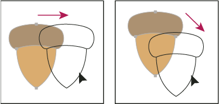

Move objects
You can move objects by dragging them with specific tools, by using the arrow keys on the keyboard, or by entering precise values in a panel or dialog box.
You can use snapping to help you position objects as you move them. For example, you can snap the pointer to guides and anchor points and snap object boundaries to gridlines. You can also use the Align panel to position objects in relation to each other.
You can then use the Shift key to constrain the movement of one or more objects so that they move in a precise horizontal, vertical, or diagonal direction relative to the current orientation of the x and y axes. You can also use the Shift key to rotate objects in multiples of 45°.

 Move or duplicate an object by pasting
Move or duplicate an object by pasting
Move an object by dragging
- Drag the object to a new location.
If a selected object is filled, you can drag from anywhere on the object. If a selected object is unfilled, if you are viewing artwork as outlines, or if the Object Selection By Path Only preference is selected, you must drag from the object’s path. (See Duplicate selections using drag and drop.)
 You
can use the Snap To Point command in the View menu to have the cursor snap
to an anchor point or guide when you drag an object within 2 pixels
of the anchor point or guide.
You
can use the Snap To Point command in the View menu to have the cursor snap
to an anchor point or guide when you drag an object within 2 pixels
of the anchor point or guide.
Move an object using the arrow keys
Move an object by a specific distance
- Choose Object > Transform > Move.
When an object is selected, you can also
double-click the Selection, Direct Selection, or Group Selection
tool to open the Move dialog box.
Move an object using x and y coordinates
- In the Transform panel or Control panel, enter new values
in either the X or Y text box, or both.
To change the reference point, click a white square on the reference point locator
 before
you enter the values.
before
you enter the values.
Move multiple objects at once
- Select one or more objects.
- Choose Object > Transform > Transform Each.
- Set the distance you want to move the selected objects in the Move section of the dialog box.
- Do one of the following:
-
To move the objects by the specified amounts, click OK.
-
To move the objects randomly, but no more than the specified amounts, select the Random option. For example, if you draw a brick wall and want the bricks to appear slightly offset from each other instead of perfectly aligned, you could select the Random option. Then click OK.
-